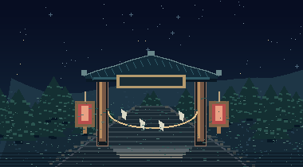
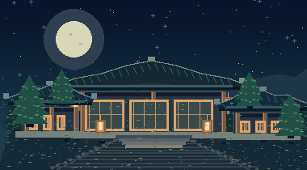

갈무리 · KoPub 돋움 · KoPub 바탕
THE CHILDREN OF THE VANISHED · 第一章
비령 · 무당들이 사라진 밤, 그 자식들이 산으로 모였다.
赤 · 南
赤
붉은 쪽 · 아직 비어 있는 페이지
黃 · 中央
黃
노란 쪽 · 아직 비어 있는 페이지
白 · 西
白
흰 쪽 · 아직 비어 있는 페이지
黑 · 北
黑
검은 쪽 · 아직 비어 있는 페이지
■ 들어갈 장소를 누르세요 내부 지도


■ 벽 · 방을 누르면 그 건물의 탐사로 간다. 기숙사와 산문에는 내부 지도가 없다.